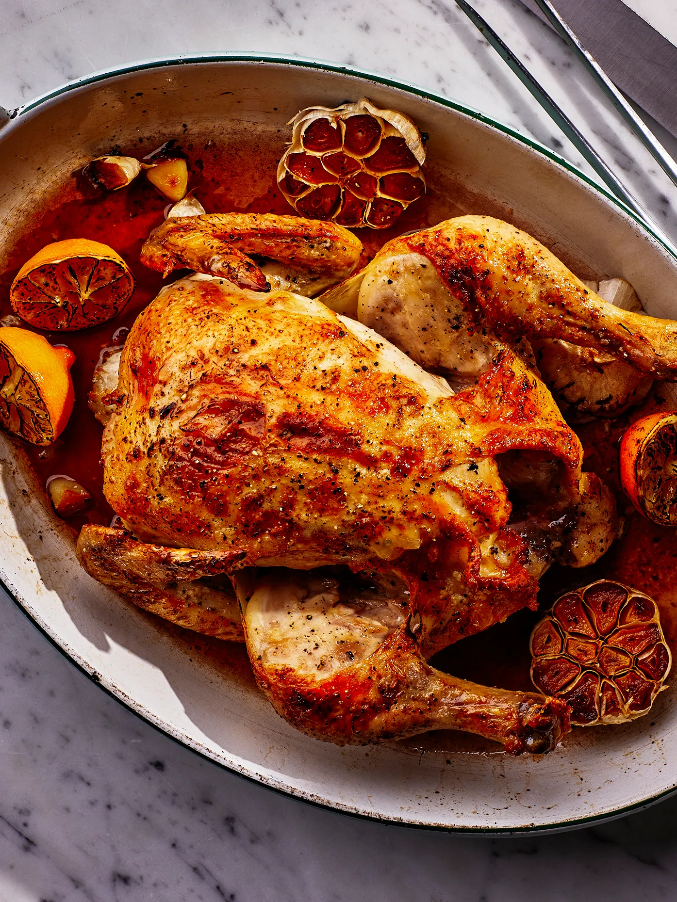

Roast chicken recipe

Description
This roast chicken recipe is proof that there’s really nothing simpler, more delicious, or more comforting than a beautifully browned roast bird surrounded by a puddle of buttery, garlicky pan juices. While cooking a whole anything can feel intimidating, this recipe is dubbed foolproof for a reason. There’s no need to truss the chicken—with this method, the drumsticks stay splayed out so that you can more easily assess doneness. No need to pull out a big cumbersome roasting pan either—your cast iron skillet (or a mid-size baking dish) will do. If you have an instant-read thermometer, now’s the time to deploy it for guaranteed perfect roast chicken every time (just remove the bird from the oven when the thickest part of the thigh hits 160°). If you don’t, we’ve made the point of doneness easy to identify, with lots of visual cues that anyone can follow.
Ingredients
- Lemon
- Head of garlic
- Unstalted butter or extra-virgin olive oil
- Whole chicken
- Kosher salt
- Freshly ground black pepper
Steps
- Arrange a rack in the center of your oven, and preheat to 425°. Cut 1 lemon in half crosswise and remove any visible seeds.
- Cut 1 head of garlic in half crosswise.
- Melt ½ stick butter in a small saucepan or microwave in a small bowl.
- Place 1 3–4-lb. whole chicken on a cutting board (best to use a plastic one you can sterilize). A word on bird size. A 3–4-lb. chicken is pretty much the ideal size for roasting this way. Something a little bit bigger will work, but once you get much past 4½-lbs. it becomes harder to guarantee that the breast meat won't dry out in the time it takes the dark meat to cook. Pat the whole thing dry with paper towels. It's super important to get the chicken as dry as possible, which helps with browning.
- With chicken breast facing up and legs pointing toward you, use a sharp knife to slice through loose area of skin connecting the leg and breast, making about a 3"-long incision. Continue cutting downward until you hit the joint that connects the thigh to the body, then stop (once you get through the skin, there’s not much there; if you are cutting through flesh, you’re too close to the breast). This exposes the leg joint, making it easy to tell if chicken is cooked. Repeat on second side.
- Season every surface of chicken, including skin along backbone, inside cavity, under wings, and inside part of the leg you just exposed, with lots of salt and pepper. If you’re using kosher salt, it should take you 4–5 generous—as in, four finger—pinches, which will be around 4 whole teaspoons.
- Transfer chicken breast side up to a large oven-safe skillet. Arrange lemon and garlic cut sides down in skillet around chicken.
- Drizzle chicken all over with melted butter (mmmmmmm) and transfer to oven.
- Roast until chicken is nicely browned and cooked through, checking for doneness after 45 minutes. To check, carefully remove skillet from oven (the handle is hot!), poke a knife into leg joints, and pierce the meat. If juices run clear, the chicken is done. If you see a rosy pink color, it needs more time. Continue to roast, checking every 5 minutes, until juices run clear. (If you’re not sure, you can also use the knife to lightly shred some of the meat along the thigh bone—the meat should look opaque and the fibers should separate easily.)
- Let chicken rest in skillet at least 15 minutes before carving—this will help the juices in the meat to settle, and will also get it down to a temperature that is cool enough to handle with your bare hands while carving. Don't worry: It's a big piece of meat, so it will still be plenty warm by the time you serve it. Transfer chicken to a platter. Pour all of those glorious, buttery pan juices over top of the meat and serve with roasted lemon and garlic alongside. Winner, winner, chicken dinner!